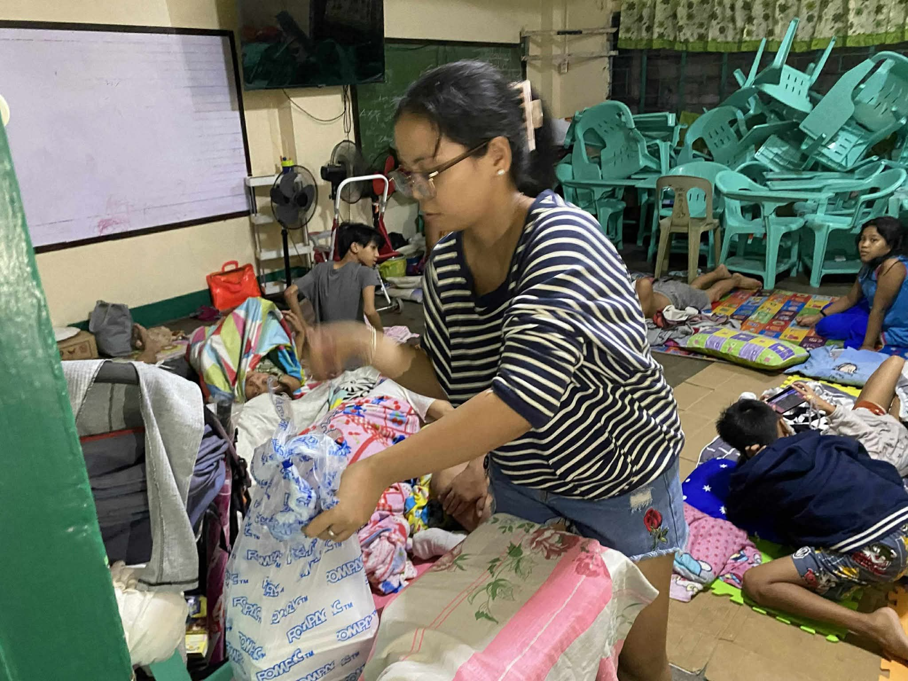
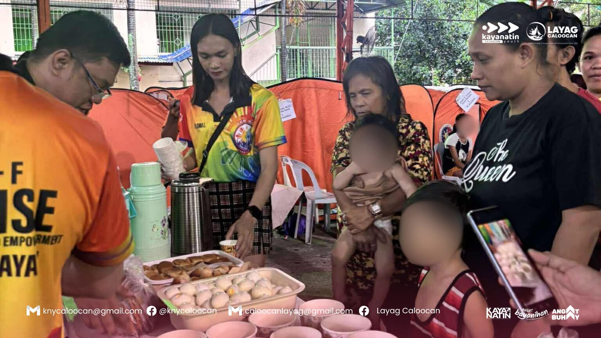
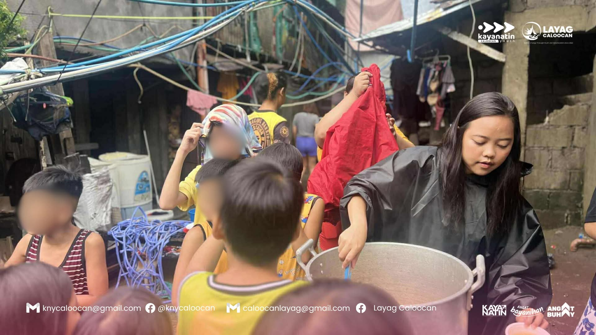
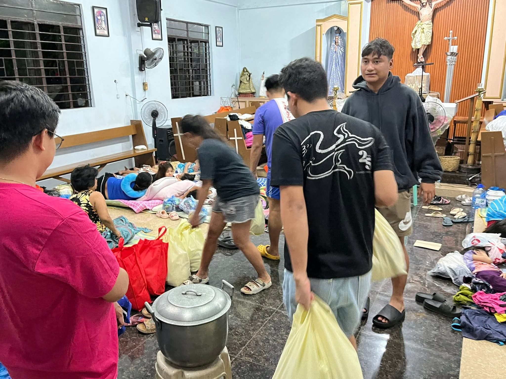

What We Do
Explore our advocacy programs designed to create real, lasting change in Caloocan City communities.




What We Advocate
Leadership Development Advocacy – encourages individuals, especially youth, to become responsible and active leaders in the community.
Community Leadership Advocacy – promotes leadership through service, volunteerism, and community involvement.